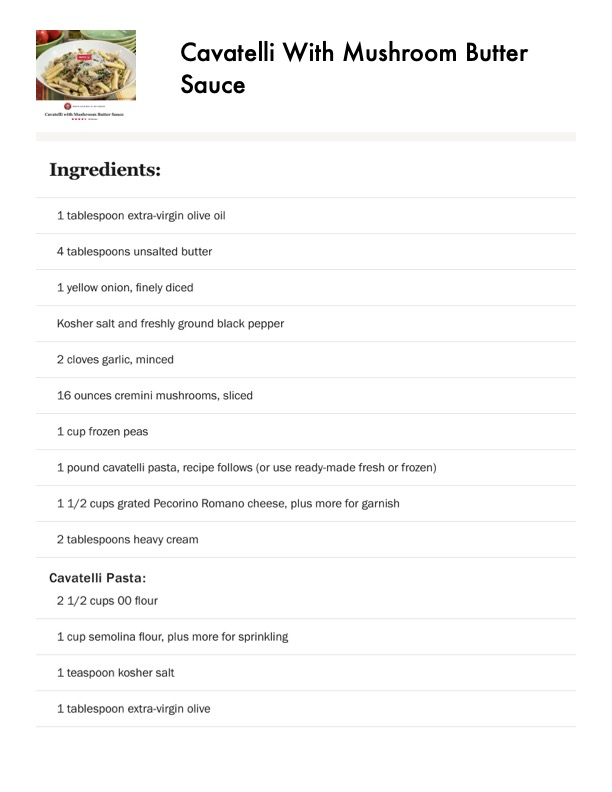

Cavatelli With Mushroom Butter

Original cookbook page 266
Ingredients
- 1 tablespoon extra-virgin olive oil
- 4 tablespoons unsalted butter
- 1 yellow onion, finely diced
- Kosher salt and freshly ground black pepper
- 2 cloves garlic, minced
- 16 ounces cremini mushrooms, sliced
- 1 cup frozen peas
- 1 pound cavatelli pasta, recipe follows (or use ready-made fresh or frozen)
- 11/2 cups grated Pecorino Romano cheese, plus more for garnish
- 2 tablespoons heavy cream
- Cavatelli Pasta:
- 2 1/2 cups 00 flour
- 1 cup semolina flour, plus more for sprinkling
- 1 teaspoon kosher salt
- 1 tablespoon extra-virgin olive
Instructions
- 16 ounces cremini mushrooms, sliced
Recipe #266 from collection